Kappale 13 Alaonttolaskimo (IVC, Inferior Vena Cava)
Alaonttolaskimon UÄ-mittauksia käytetään runsaasti erityisesti oikean eteisen paineiden (RAP) ja nestevolyymistatuksen arvioimisessa. IVC on (yleensä) aika helppoa löytää ja sen tutkiminen antaa paljon tärkeää informaatiota potilaasta, jonka takia sen mittaukset ja niiden tulkitseminen on järkevää opetella.
13.1 Subkostaalinen projektio
IVC kulkee maksasta posteriorisesti maksan depressiossa nimeltään fossa for the inferior vena cava (useasti IVC on oikein “intrahepaattinen”, kun posteriorisestikin sitä ympäröi maksakudosta ja fossa onkin kunnon kanava) ja siihen yhdistyy maksalaskimoita ennen sen kulkua pallean läpi.
IVC:n tutkiminen tehdään ensisijaisesti IVC-subkostaaliprojektiosta. Potilas siis makaa suoraan selällään ja anturi asetetaan rintalastan miekkalisäkkeen alapuolelle niin, että nypy osoittaa potilaan päähän päin. Näin saadaan IVC:sta pitkittäisakselileikkaus.


13.1.1 IVC:n erottaminen vatsa-aortasta
Yleinen “rookie mistake” IVC:n mittauksissa on sen sekoittaminen vatsa-aorttaan. IVC ja vatsa-aortta siis kulkevat vierekkäin vatsaontelossa – IVC oikealla ja vatsa-aortta vasemmalla puolella. UÄ-aallot voivat helposti subkostaaliprojektiossa ensin leikata vatsa-aortan, jolloin on osattava tunnistaa, että nyt ei visualisoida IVC:tä ja tehdä tarvittavat peliliikkeet. Joskus kokeneillakin ultraajilla voi kylläkin tapahtua tunnistamisvirhe, jos kuvanlaatu on heikko.
Vatsa-aortan ja IVC:n voi yleensä erottaa toisistaan suonen ulkonäköä, liikehdintää ja suhdetta muihin viereisiin rakenteisiin tarkastelemalla.
- Myös IVC voi kuitenkin olla usein pulsatiili, varsinkin erilaisissa stressitiloissa (esim. sepsis, nestevaje, kirroosi) ja trikuspidaalivuodossa. Tämän takia pulsatiliteettia ei tulisi käyttää ainoana parametrina IVC:n ja vatsa-aortan erottamisessa.

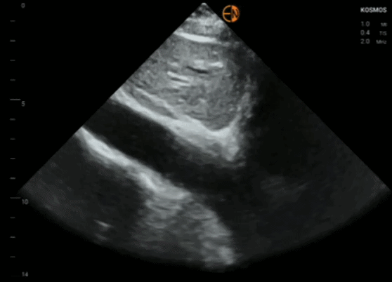
Tässä alla on poikkileikkausprojektio, jossa näkyy erityisen hyvin tilanne, jossa IVC on pulsatiili.

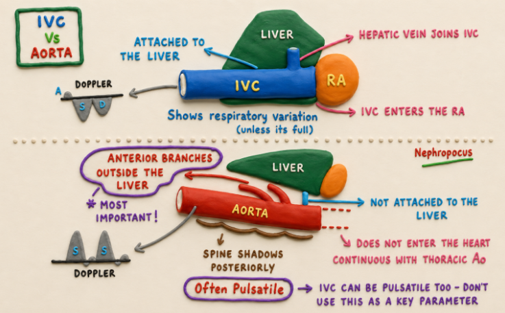
Kun on tunnistanut, kumpaa suonta katsoo, niin voi anturin asentoa muokaten visualisoida haluamansa suonen.
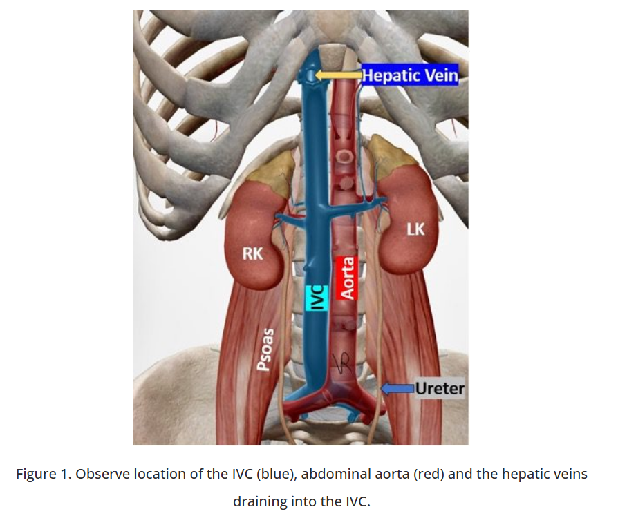
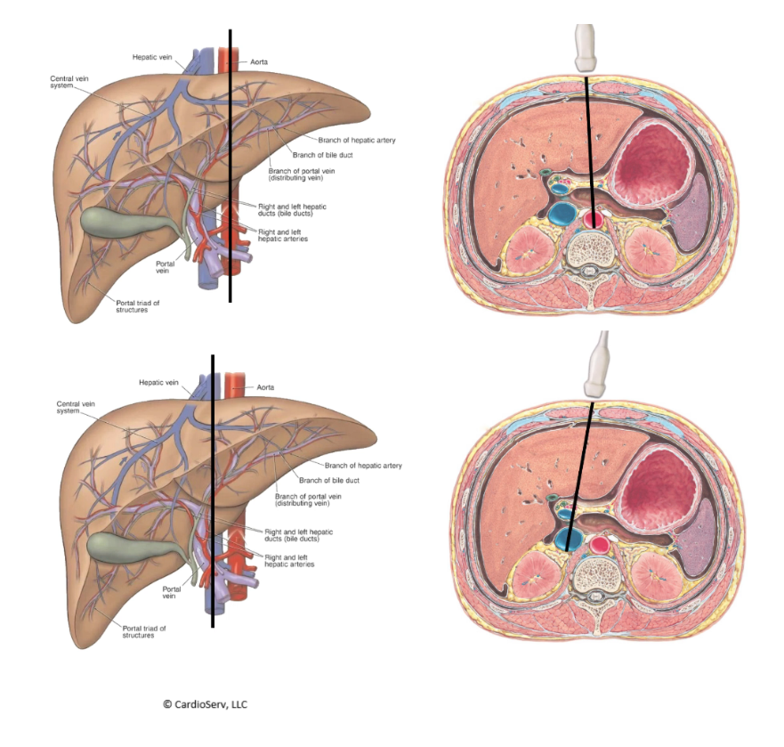
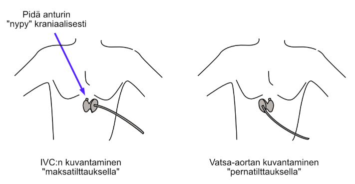
13.2 2D-kuvamittaus
Tärkeimmät alaonttolaskimosta otettavat mittaukset ovat sen paksuus ja hengitysvaihtelu. Nykysuositusten mukaan kannattaa mitata alaonttolaskimo 2D-kuvasta eikä M-moodista, jolla ei yleensä saa aivan kohtisuoraa leikettä IVC:stä.
Keskuslaskimopaineen ja nestemäärän laskimostossa lisääntyessä IVC paksunee. Sen lisäksi arvioidaan IVC:n herkkyyttä kollapsoinnille sisäänhengityksen myötä. Sisäänhengitys siis laskee intratorakaalista painetta ja kannustaa alaonttolaskimon veren tyhjenemistä oikeaan eteiseen, jolloin IVC menee normaalisti hieman kasaan (kollapsoituu).
Aluksi tulee siis hakea hyvä pitkittäisprojektio IVC:stä. Oikea mittauspaikka on n. 1-2cm “jalkoihin päin” maksalaskimon junktiosta. Mittaus tehdään inner-edge-to-inner-edge. IVC:tä tulee kuvata sekä ekspiriumin ja inspiriumin aikana, jonka jälkeen pysäytetään kuva. Erikseen ei tarvitse pohtia kumpi hengityksen vaihe olikaan menossa: tulee yksinkertaisesti mitata IVC samasta kohtaa laajimmillaan ja kapeimmillaan.
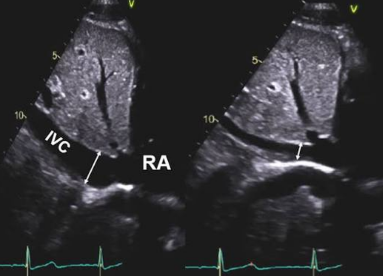
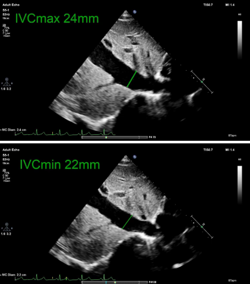
13.3 Tulkinta
IVC:n paksuutta ja hengitysvaihtelua hyödyntämällä voidaan antaa arvio keskuslaskimopaineesta (CVP) ja oikean eteisen paineesta (RAP), vaikka korrelaatio ei aina olekaan täydellinen (IVC:n läpimitta ja kollapsoituminen ≈ CVP ≈ RAP). CVP siis tarkoittaa verenpainetta torakaalisessa vena cavassa ennen oikeaa eteistä. Vena cavojen ja oikean eteisen välillä ei ole anatomisia läppiä, joten nestepatsaat vena cavoissa ja oikeassa eteisessä muodostavat jatkuvan nestetilan. tästä johtuen (normaalitiloissa) CVP ja RAP ovat käytännössä samat.
IVC:n läpimitan kasvaessa CVP:n ja täten myös RAP:n ajatellaan nousevan. CVP toimii epäsuorana markkerina potilaan nestevolyymistatuksesta, koska hypovolemia tietysti vähentää nestemäärää laskimostossa ja siten keskuslaskimopaine laskee. Hypervolemia taas aiheuttaa korkean CVP:n.
On esitetty monia IVC:n raja-arvoja, mutta tällä hetkellä käytetyin on seuraava helposti muistettavissa oleva periaate, jolla CVP:n saa hetkessä pääteltyä IVC:stä:
- IVC siis joko ≤ 2.1 cm ja kollapsoituu < 50% sniffatessa tai > 2.1 cm ja kollapsoituu > 50% sniffatessa
- Optimaalisesti tässä tilanteessa tulisi käyttää myös toisia RA:n paineen arviointikeinoja (esim. trikuspidaalisisäänvirtausten E/A-suhdetta, trikuspidaalista E/E’-suhdetta ja maksalaskimoiden virtauksia systolessa/diastolessa (HVs ja HVd); myös RA:n dilatoituminen tai vasempaan eteiseen pullistuva eteisväliseinämä viittaisivat kohonneeseen paineeseen). Näitä hyödyntämällä voidaan CVP tiputtaa joko normaaliksi (3 mmHg) tai kohonneeksi (15 mmHg). Näitä lisämittauksia kuitenkin käytetään aika harvoin, mutta ns. VExUS-scoren käyttö on lisääntymässä laskimokongestion tarkemmassa arvioinnissa (lisää tästä hieman alempana).
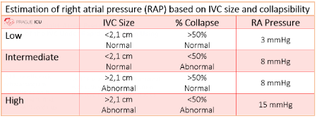
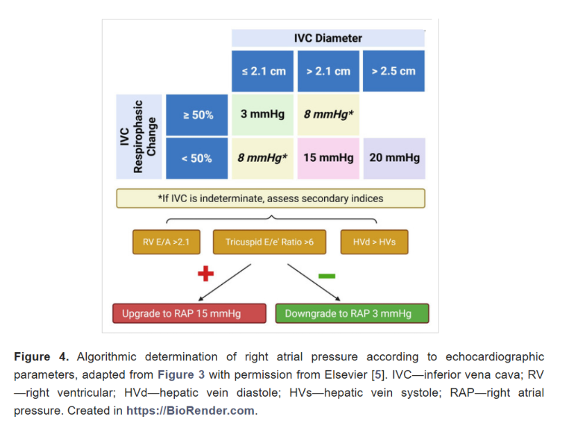
13.4 Toiset ikkunat
Standardi subkostaalinen IVC:n pitkittäisakseli -projektio ei ole ainoa projektio, jota voi tai edes kannattaa käyttää IVC:n arvioimisessa. IVC ei yleensä ole täydellinen ympyrä ja sen mittaaminen vain yhdestä kuvakulmasta altistaa virheille.
Toinen yleisistä ongelmista pelkän pitkittäisakselin kanssa on ns. cylinder effect, jossa UÄ-aallot eivät kulje IVC:n keskikohdan kautta -> läpimitta jää todellista pienemmäksi.
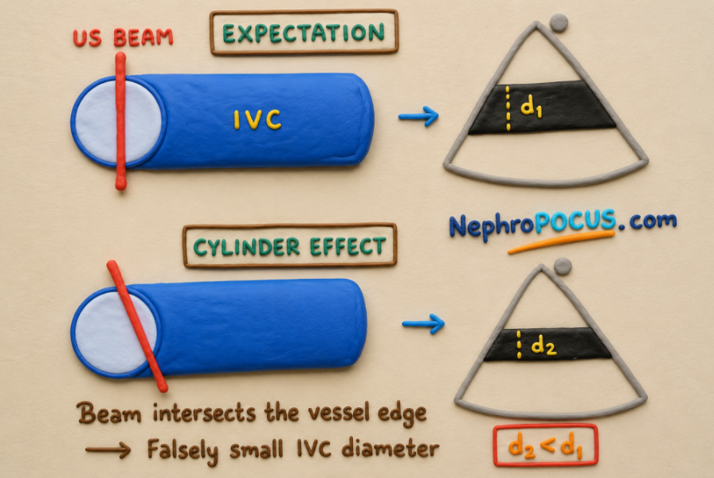
13.4.1 Subkostaalinen poikittaisakseli
Tyypillisen pitkittäisakselin lisäksi kannattaa oppia tarkistamaan myös poikittaisakseli, joka saadaan rotatoimalla anturia 90 astetta subkostaalisesta pitkittäisakselista. Tämän projektion etu on sylinterivaikutuksen minimointi. Poikittaisakseliprojektiossa IVC näkyy näytön vasemmalla puolella maksan ympäröimänä. Sen vieressä ja anteriorisesti nikamavarjosta näkyy aortta, joka voi tosin olla suolikaasujen hämärtämä.
Poikittaisakselissa voidaan myös paremmin arvostaa IVC:n ovaalia – joskus jopa kolmiomaista – muotoa. IVC:stä voidaan erottaa minor (short diameter) ja major (long diameter) axis sen mukaan, kumpi leveydestä/korkeudesta on suurempi. Näistä voidaan myös laskea suhde (S/L-ratio tai sphericity index), josta lisää hieman alempana tulkinnan yhteydessä.
Poikittaisakselinkin kanssa kannattaa muistaa 2D-ultraäänitutkimusten yleinen sääntö: aina kannattaa hakea useampi kuin yksi kuvakulma. Ei siis kannata nojata pelkästään poikittaisakseliprojektioonkaan, vaan hyödyntää pitkittäisakselia sen kanssa. Poikittaisakselin yleisin ongelma on väärä mittaustaso ja oikean tason löytämisen vaikeus.
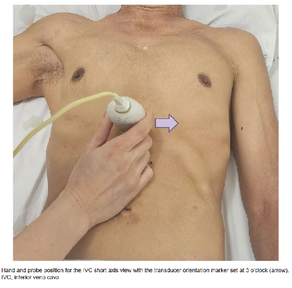
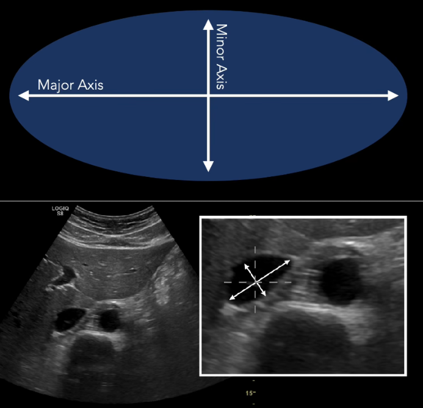
13.4.2 Rescue view (right lateral transabdominal coronal approach / transhepatic view)
Subkostaalinen lähestymistapa ei aina tarjoa riittävän hyvää näkyvyyttä (esimerkiksi suolikaasua tiellä). Tällaisissa tapauksissa voi yrittää visualisoida IVC:N oikeasta kyljestä n. keskiaksillaarilinjan - anteriorisen aksillaarilinjan väliseltä alueelta niin, että nypy osoittaa potilaan päähän päin. Tässä ikkunassa aortta näkyy usein IVC:n “alla” näytöllä (“double barrel shotgun” sign), kun UÄ-aallot kulkevat oikealta vasemmalle (muista, että rakenteet lähempänä anturia näkyvät näytöllä ylempänä -> IVC on oikealla anatomisesti ja siten näkyy ylempänä kuin sen vasemmalla puolella oleva aortta).
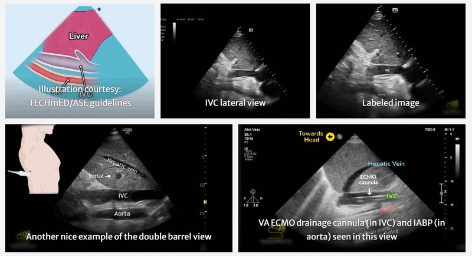
On kuitenkin tärkeää huomioida, että tässä projektiossa nähdään IVC:n läpimitta nähdään enemmän sen major axiksessa eikä standardimmassa anteroposteriorista minor axista suosivassa kuvakulmassa. Tästä johtuen rescue-ikkunan mitat eivät ole suoraan soveltuvia samanlaiseen tulkintaan kuin anteroposterioriset mitat. Niitä kuitenkin voidaan käyttää antamaan yleinen käsitys IVC:n paksuudesta ja kollapsoitumisherkkyydestä.
Jos rotatoi tyypillisessä rescue-ikkunassa anturia 90-astetta, niin saa poikkileikkauksen IVC:stä. Jos IVC on ympyrämäinen, niin on todennäköistä että lateraaliset ja anteroposterioriset läpimitat korreloivat ja tällöin rescue-mitat voivat olla jokseenkin suoraviivaisesti hyödynnettävissä CVP:n tulkintaan.
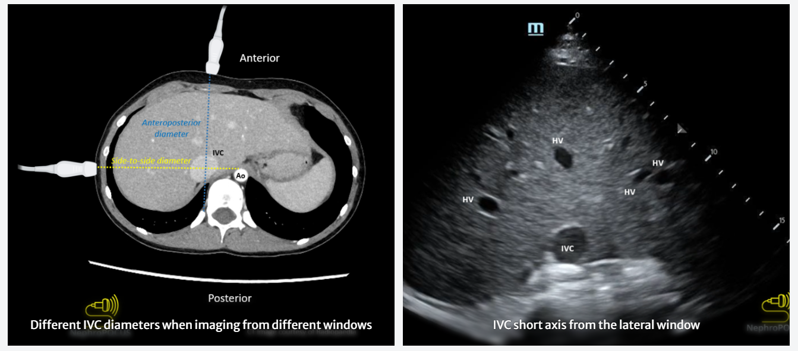
13.5 Sudenkuopat
IVC:n mittauksissa tulee olla tarkkana, koska aiheeseen liittyy runsaasti sudenkuoppia. Ylempänä ollaan jo tuotu esille IVC:n ei-ympyrämäinen muoto sekä sylinteri-ilmiö, mutta nämä eivät todellakaan kata kaikkea huomioitavaa. Otetaan kuitenkin nekin tässä nyt uudestaan, koska ne ovat todella tärkeitä osata ottaa huomioon.
Näiden jälkeen käsitellään vielä tulkintaa häiritseviä kliinisiä tilanteita.
13.5.1 Sylinteriefekti
Tämä ongelmakohta mainittiin jo aikaisemmin, mutta kerrataan vähäsen. Sylinteriefektissä UÄ-aallot eivät siis kulje IVC:n keskikohdan kautta pitkittäisakselimittauksissa, jonka takia sen läpimitta jää todellista pienemmäksi. Sylinteriefekti aiheuttaa myös arviovirheen (yliarvio) IVC:n kollapsiherkkyydestä.
Ongelman ratkaisu on anturin siirtäminen/tilttaaminen niin, että saa löydettyä suonen maksimaalisen läpimitan eikä vain heti tyydy ensimmäiseen visualisaatioon. IVC kannattaa myös tarkastaa poikkileikkauksessa.
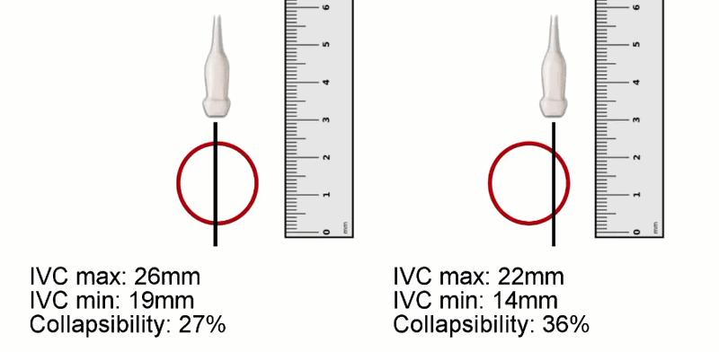
13.5.2 Muoto
IVC ei ole usein täydellinen sylinteri ja pitkittäisakselissa ei aina havainnoida sitä akselia, jossa rakenne kokee suurimman kokomuutoksensa hengityksen mukana -> voidaan aliarvioida kollapsoituminen. Kuvassa näkee poikittaisakselin ja yleensä suurin kollapsiherkkyys on minor axis suunnassa. Pitkittäisakselissa tunnistettaisiin vain keltaisen linja kuvaama suunta ja sinänsä nähtäisiin kollapsoituminen vinosti eikä täydellisyydessään -> pitkittäisakseli voi aliarvioida kollapsiherkkyyttä.
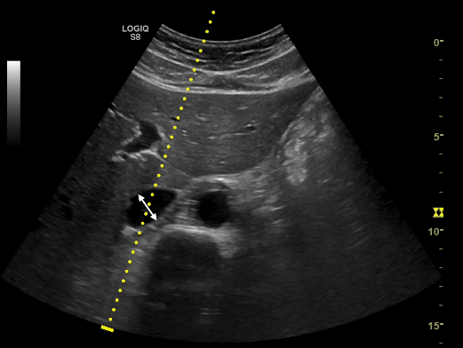
Kiinnostus poikkileikkauksesta tehtyihin mittauksiin on kasvussa. Yksi tutkimus on osoittanut, että ns. “short-to-long diameter ratio (S/L)” tai “sphericity index” poikkileikkausprojektiosta korreloi hyvin keskuslaskimopaineen kanssa. Käytännössä suhteet siis kuvaavat sitä, kuinka ympyrämäinen IVC on. Mitä enemmän IVC:stä tulee ympyrämäinen ovaalin sijasta, sitä korkeampi CVP on.
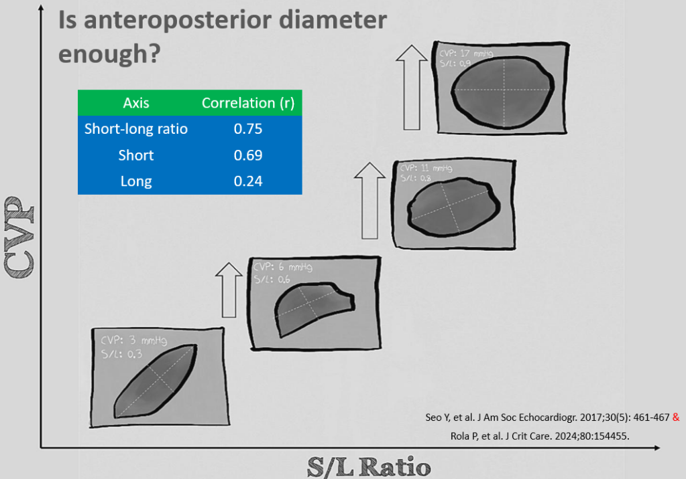
13.5.2.1 Poikkileikkausprojektion ongelmat - leikkaustaso
Pitkittäisakselissa on helpompi tunnistaa, mistä mittaa läpimitan – poikkileikkauksessa tämä on haastavampaa. Tulisi löytää piste IVC:stä, joka on hieman distaalisesti IVC-maksalaskimo-junktiosta. Optimaalisesti kuvassa tulisi näkyä IVC ja sen lisäksi osittaiset leikkeet kolmesta maksalaskimosta, jotka kulkevat kohti IVC:tä – itse maksalaskimoiden ja IVC:n junktiota ei tulisi näkyä.
Alla kuvassa näkyy, miten IVC:n läpimitta muuttuu anturin kulkiessa distaalisesti. Keltaiset viivat pitkittäisakselikuvassa kuvaavat eri leikkaustasoja, jotka näytetään videoklipeissä. HV = Hepatic vein; PV = Portal vein (yleensä seinämä aika hyperekooinen)

Väärä leikkaustaso voi ilmentyä alla näkyvällä tavalla eli läpimitat poikkeavat merkittävästi pitkittäis- ja poikittaisakselissa.
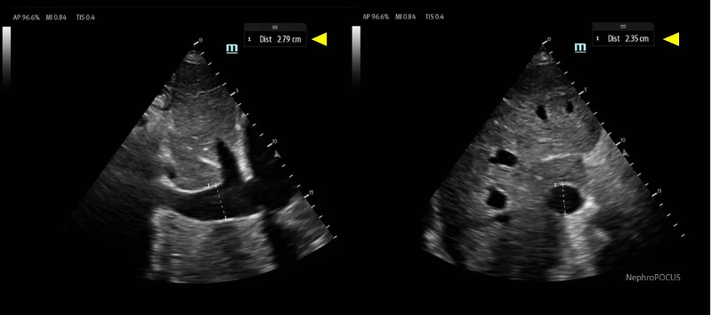
13.5.2.2 Poikkileikkausprojektion ongelmat - sekoittaminen oikeaan eteiseen
Oikea eteinen (RA) on IVC:n tapaan pyöreähkö ja anekooinne, joten sen voi jokseenkin helposti sekoittaa IVC:ksi poikittaisleikkausprojektiossa – varsinkin kun maksalaskimo vaikuttaa laskevan suoraan RA:han (junktio IVC:hen on todella lähellä oikeaa eteistä).
RA:n ja IVC:n erottamisessa auttaa kirkkaan pallearajan etsiminen. Pallean toisella puolella on oikea eteinen, toisella taas IVC.
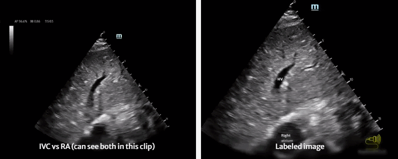
13.5.3 Mediolateraalinen liike
IVC ei ole täysin staattinen sijainniltaan. Keskiarvolta ihmisillä on mediolateraalista liikettä hengityksen aikana n. 4mm ja >75%:lla liike on <5mm. Kuitenkin pienellä osalla väestöstä (linkatussa tutkimuksessa n. 4%:lla) liike voi jopa olla >10 mm.
Mediolateraalinen liike voi aiheuttaa yliarvion IVC:n kollapsiherkkyydestä, kun suoni liikkuu anturin alta pois ja sen seurauksena ei enää leikata suonta sen keskipisteestä.
Ongelmaa voi vähentää anguloimalla anturia liikkeen suuntaisesti, jotta pysytään pidempään suonen keskipisteessä.
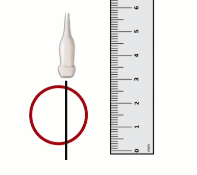

13.5.4 Sekoittaminen maksalaskimoon
Subkostaalisessa pitkittäisakseliprojektiossa UÄ-anturin ollessa hieman vinossa voidaan helposti leikata maksalaskimon suuntaisesti, jolloin se visualisoituu IVC:n sijaan pitkittäisakselissa. Kannattaa yrittää rotatoida anturia hieman suoremmaksi ja myös visualisoida suonen liittyminen oikeaan eteiseen (IVC menee ilman estettä RA:han).

13.6 Tulkintaa häiritsevät kliiniset tilanteet
IVC-mittausten rajoitukset nestetasapainon arviossa tulee tiedostaa, koska monissa kliinisesti yleisissäkin tilanteissa IVC:n koko ja hengitysvaihtelu eivät suoraan perustu volyymistatukseen tai ennusta vasteisuutta nesteille tarkasti. IVC ei ole muusta hemodynamiikasta tai ympäröivistä rakenteista erillinen yksikkö, vaan siihen voi vaikuttaa todella monet tekijät. Käydään läpi yleisimpiä tilanteita, jotka on myös listattu alla olevaan taulukkoon, joka on tästä artikkelista. Yleisesti tiivistelmänä voisi ehkä sanoa, että IVC-mittaukset eivät ole parhaiten sovellettavissa kriittisesti sairaiden tehohoitopotilaiden kanssa.
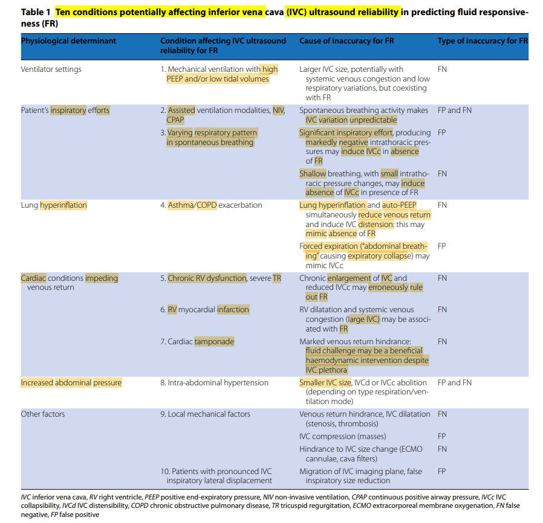
13.6.1 Ventiloitu potilas
IVC on usein dilatoitunut eikä kollapsoidu, jos potilas on mekaanisessa ventilaattorissa. Normaalitilanteessa spontaanissa sisäänhengityksessä intratorakaalinen paine siis laskee ja IVC kollapsoituu. Mekaanisessa ventilaatiossa ilmaa taas työnnetään positiivisella paineella keuhkoihin -> intratorakaalinen paine nousee ja IVC distensoituu (↑ intratorakaalinen paine = ↑ ekstratorakaalinen laskimoverivolyymi).
Jos potilas on täysin ventiloitu eli ei hengitä ollenkaan itse, niin voi käyttää ns. distensibility indexiä (DI) normaalisti käytettävän collapsibility indexin sijaan. Distensibility IVC = ((IVC max – IVC min) / IVC min ) * 100 (vrt. kollapsi-indeksi = ((IVC max – IVC min) / IVC Max ) * 100). Distensibility index ≥ 18% ennustaa nestevasteisuutta.
Jos potilas taas on spontaanisti hengittävä, mutta ventilaatiota avustetaan positiivisella paineella, niin nestevasteisuuden ennustamisesta IVC-mittauksilla ei ole tutkittua dataa.
13.6.2 Keuhkojen hyperinflaatio
Astman tai COPD:n pahenemisvaiheet ovat yhteydessä keuhkojen hyperinflaatioon ja ns. auto-PEEP:n (intrinsic positive end-expiratory pressure) kehittymiseen. Obstruktiivisen keuhkosairauden pahentuessa ilmaa jää merkittävästi enemmän keuhkoihin ekspiraation loppuvaiheessa kuin normaalisti. Tämä johtaa siihen, että intratorakaalinen paine kertyy ja pysyy korkeana uloshengityksen lopussakin. Tämä voi johtaa IVC:n distensoitumiseen ja valheellisesti vähentää ennustettua nestevasteisuutta.
Samalla potilaat saattavat hengittää voimakkaammin ja käyttää enemmän abdominaalisia apulihaksia, mikä nostaa intra-abdominaalista painetta, kompressoi IVC:tä ja voi aiheuttaa ekspiratorista IVC:n kollapsoitumista.
IVC:n arvioiminen obstruktiivisten keuhkosairauksien pahenemisvaiheissa on siis epävarmaa.
13.6.3 Sydämestä johtuvat ongelmat (Pulmonaalihypertensio / Trikuspidaalivuoto / RV-infarkti / Tamponaatio)
Krooninen pulmonaalihypertensio johtaa oikean kammion dysfunktioon, oikean eteisen paineiden (RAP) nousuun ja krooniseen IVC:n laajenemiseen ja vähentyneeseen hengitysvaihteluun. Samoin pulmonaalihypertensiosta tai mistä tahansa muustakin syystä johtuva vaikea trikuspidaalivuoto johtaa dilatoituneeseen IVC:hen sekä vuodon myötä myös systoliseen pulsatiliteettiin.
Laskimopaluuta voi häiritä myös oikean kammion infarkti, joka aiheuttaa akuuttia systolista ja diastolista RV:n vajaatoimintaa, joka johtaa oikeanpuoleisten täyttöpaineiden kohoamiseen ja systeemiseen laskimokongestioon. LV:stä tulee kompensatorisesti hyperdynaaminen ja potilas voi olla nestevasteinen, vaikka IVC olisikin distensoitunut.
Tamponaatiokin on tilanne, jossa sydämen täyttyminen häiriintyy ympäröivästä perikardiumeffuusiosta johtuen -> täten johtaa dilatoituneeseen ja jäykkään alaonttolaskimoon.
Data sopivista viitearvoista IVC:lle puuttuu näissä potilasryhmissä.
13.6.4 Kohonnut intra-abdominaalinen paine
Kohonnut vatsaontelon paine ja varsinkin ns. abdominaalinen aitio-oireyhtymä (abdominal compartment syndrome, ACS) kompressoivat ja deformoivat IVC:tä. Vatsaontelon kohonnut paine on usein merkittävänä tekijänä monielinvaurion synnyssä etenkin potilailla, joilla on vaikea haimatulehdus, kookas vatsaontelon takainen verenpurkauma, runsas vatsaontelon veri- tai askiteskertymä.
13.6.5 Nuoret urheilijat
Kuten monet muutkin kardiologiset mittaukset, nuorilla urheilijoilla voi helposti olla poikkeava löydös alaonttolaskimonkin suhteen. IVC voi siis olla nuorilla hyväkuntoisilla henkilöillä merkittävänkin suuri ilman kohonneita keskuslaskimopaineita. Laajentunut IVC on fysiologinen adaptaatio toistuvalle kestävyysurheilulle eikä heijasta kohonnutta oikean kammion painetta (RAP) näillä potilailla.
Varsinkin kilpauimareilla on jopa muihin kestävyysurheilijoihin nähde suuret IVC:t – tämän tutkimuksen mukaan keskiarvolta 2.66 cm vs 2.17 cm muilla urheilijoilla (vs 1.14 cm kontrolliryhmässä).
Mielenkiintoinen maininta nuorten ihmisten ultraamisesta: Myös kuukautiskierron vaiheella voi olla pienehkö vaikutus IVC:n dilataatioon.. Ensimmäiset päivät kuukautisvuodosta ovat yhteydessä lievään IVC:n laajentumiseen, koska niihin aikoihin on pienin vasodilatoristen (estrogeeni / progesteroni) sukupuolihormonien määrä verenkierrossa – vasodilataattoripuutoksessa valtimopuoli supistuu, jälkikuorma nousee ja laskimopuoli laajenee.
13.6.5.1 Particulate matter (ja “smoke”)
Ekokardiografiassa “particulate matter (PRM, PM)” viittaa yleensä erillisiin partikkeleihin, jotka leijuvat IVC:ssä. Löydös on tyypillisin ei-takykardisilla potilailla, joilla ei ole tunnettua sydänsairautta. Jokseenkin ei-harvinainen löydös on urheilijoilla, jotka ovat suhteellisen bradykardisia, mutta mitenkään yleisestä löydöksestä ei siis ole kyse.
Merkittävää tutkimusdataa aiheesta ei ole, joten PM:n etiologia ja kliininen merkitys on epävarmaa tällä hetkellä. Tietysti hieman samanlaisia löydöksiä voi aiheuttaa ilma- tai rasvaemboliat, jotka eroavat visuaalisesti PM:stä niiden tarkkarajaisuuden kautta.
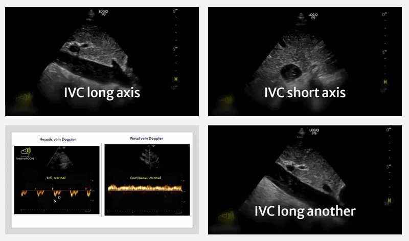

Toinen hieman samanlainen echo-löydös nimeltään “smoke” (virallisemmalta nimeltään “spontaneous echo contrast”) nähdään taas staasitilanteissa – todennäköisesti johtuen rouleaux-rakenteiden formaatiosta (pokerichippimäiset punasolurakennelmat) ja signaloi kohonnutta riskiä hyytymien muodostumiselle. Löydös ei ole mitenkään IVC:lle spesifinen, vaan voi ilmentyä missä tahansa hitaan staasivirtauksen suonessa/lokerossa (esim. vasen eteinen mitraalistenoosissa/eteisvärinässä, muutkin lokerot sydämen vajaatoiminnassa, aortta merkittävässä aortan dilataatiossa yms.). Se ilmenee pyörteisenä harmaana vaihtelevan tiheänä sumuna; PM-partikkelit tuppaavat olemaan suurempia, yksittäisiksi eroteltavissa ja nopeammin virtaavia.
Alla on esimerkkejä smokesta. Kaksi ensimmäistä on IVC:stä sydämen oikean puolen vajaatoiminnassa. Kolmannessa potilaalla oli merkittävän matala vasemman kammion ejektiofraktio. Viimeinen gif taas on todella harvinainen löydös, jossa potilaalla on rakenteellisesti normaali sydän, mutta potilaalla on hematologinen maligniteetti.


13.7 VExUS
Venous Excess Ultrasound (VExUS) Score on tutkimus, joka arvioi ja pisteyttää systeeemisen laskimokongestion. Siinä arvioidaan IVC:n lisäksi dopplermittauksilla myös maksalaskimon, porttilaskimon ja intrarenaalisen laskimon kongestio. Kuten jo aikaisemmin käytiin läpi, niin IVC:n paksuus ja hengitysvaihtelu on hyvin häiriöherkkä mittari (esim. trikuspidaalivuoto, urheilijat), joten on yritetty kehittää paremmin kongestiota havainnollistavia mittareita. VExUS-tutkimuksessa hyödynnettävät elinten (maksan, suoliston ja munuaisten) doppleraallot kuvaavat sitä, miten eri elimet kokevat nestelastin – protokolla voi toimia myös dekongestiivisen hoidon seurantatyökaluna.
Ennen kuin mennään tarkemmin VExUS-protokollan suorittamiseen, niin käydään nopeasti läpi sen hemodynaamisista periaatteista tärkein: perfuusiopaine. Elinten saama verenkierto eli perfuusio perustuu yksinkertaistettuna keskivaltimopaineen (MAP) ja keskuslaskimopaineen (CVP) gradienttiin eli perfuusiopaineeseen (PP = MAP - CVP). Jos ulosvirtauksen (CVP) resistenssi nousee, niin tämä vähentää perfuusiopainetta ja siten vähentää kudoksen saamaa verenkiertoa. Yleensä siis lääketieteessä tupataan keskittymään enemmän kudoksen sisäänvirtaukseen eli keskuslaskimopaineeseen, mutta on myös tärkeää osata huomioida perfuusioon yhtäläisesti osallistuva ulosvirtaus eli laskimopuoli. Ulosvirtauksen painearvio voidaan non-invasiivisesti karkeasti tehdä IVC:llä ja vähän tarkemmin VExUS-protokollalla.
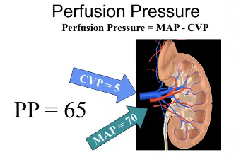
Käydään seuraavaksi läpi tarkemmin VExUS-protokollan suorittaminen. Potilaan tulisi olla selällään tutkimuksen aikana. Soveltuvia antureita ovat phased array- tai curvilinear-anturit; koneessa tulee myös olla pulse wave (PW) -mittauskyvykkyys.
13.7.1 Vaihe 1 - IVC
Ensimmäisessä vaiheessa tulisi tehdä sama IVC:n arvio, joka on jo opetettu tässä kappaleessa. Arvioidaan siis subkostaali-ikkunasta IVC:n paksuus (ja tämän paksuuden vaihtelu hengityksen myötä). Jos IVC < 2cm, niin VExUS on gr 0 eikä merkittävää laskimokongestiota ajatella olevan -> virallisten ohjeiden mukaan ei tarvitse tutkia VExUS-protokollan muita osia. Jos IVC > 2cm, niin voi siirtyä seuraaviin osioihin.
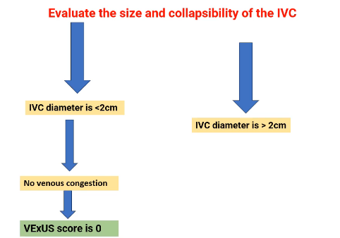
13.7.2 Vaihe 2 - Maksalaskimo
Myös maksalaskimon arvio voidaan tehdä subkostaalisesti. Toinen vaihtoehto (monissa lähteissä ensisijainen) on lateraalinen projektio (rescue window) eli anturi asetetaan oikeaan kylkeen n. keskiaksillaarilinjan ja anteriorisen aksillaarilinjan väliin nypy osoittaen potilaan päähän päin. Tässä ikkunassahan näkyi ns. “double barrel shotgun” sign eli aortta IVC:n “alla” näytöllä. Lisäksi prominenttina näkyy yleensä myös kolmas suoni, joka on nyt arvioitava maksalaskimo. Maksalaskimot ovat ohutseinäisiä maksan sisäisiä rakenteita, jotka yhdistyvät alaonttolaskimoon.
Ensimmäisessä kuvassa on subkostaalinen ikkuna (HV = maksalaskimo) ja toisessa lateraalinen ikkuna.
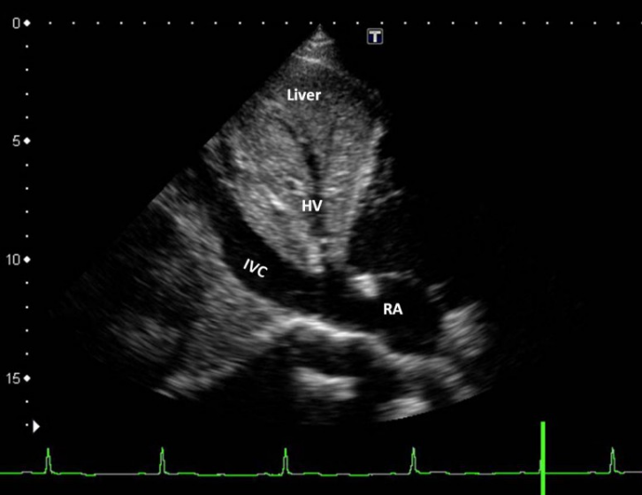
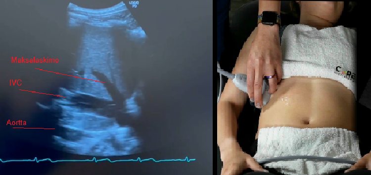
Kun on saanut maksalaskimon hyvin näkyviin, niin tulisi laittaa väridopplerlaatikko sen päälle. Virtauksen tulisi olla pääasiassa sinistä eli poispäin anturista. Sitten suoneen asetetaan PW-sample gate n. 1-2cm poispäin HV-IVC-junktiosta, kun alla olevassa esimerkkivideossakin (huomioi, että kyseessä on standard-modessa tehty kuvantaminen eli peilikuva cardiac modesta, jossa indikaattori on näytön oikealla).
Huom! VExUS-mittauksissa (niin maksalaskimo, portttilaskimo kuin munuaislaskimo) potilaan tulisi pidättää hengitystään loppuekspiraatiossa (ei tarvitse pakotettua puhallusta niin, että kaikki ilma olisi pihalla, mutta normaalin uloshengityksen jälkeen tulisi pysäyttää hengitys mittauksen ajaksi). Tämä vähentää hengityksen aiheuttamasta elinten liikkumisesta johtuvaa artefaktaa ja mahdollistaa standardoidummat mittaukset.
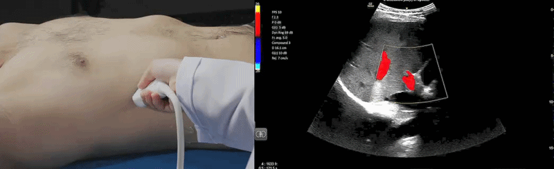
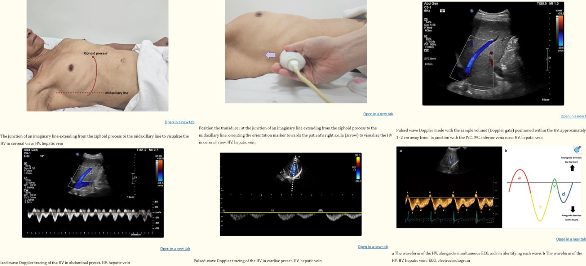
Normaalilla ei-kongestoituneella potilaalla on kolme (-neljä) erillistä aaltoa: pieni positiivinen deflektio (A-aalto) ja kaksi negatiivista deflektiota (S- ja D-aallot). S- ja D-aaltojen välillä on ns. V-aalto.
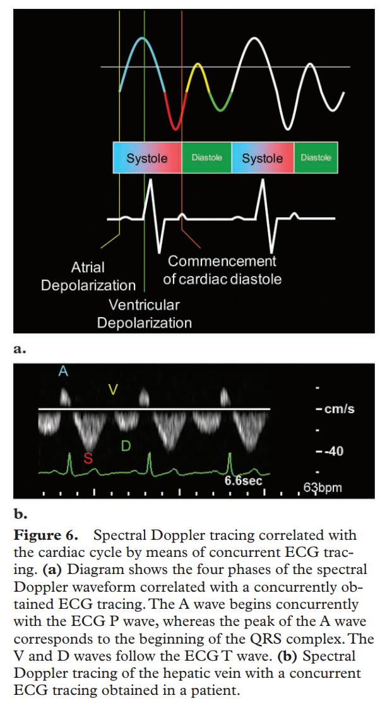
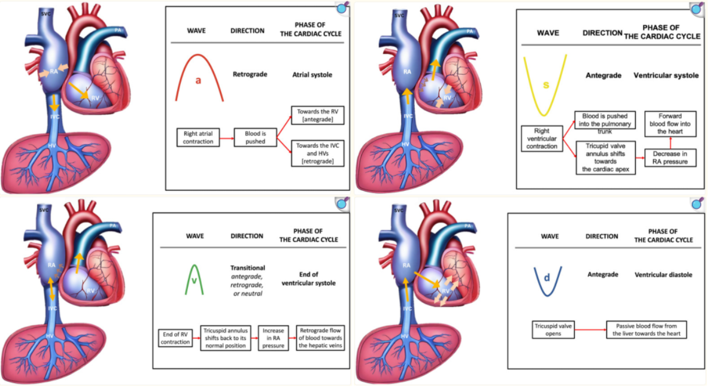
Aaltoja ja niiden suhteita voidaan käyttää päätellessä laskimokongestion tilannetta. Normaalisti S-aalto on suurempi kuin D-aalto (kirjataan “S>D” tai “S/D-suhde positiivinen”). Laskimokongestion lisääntyessä S/D-suhde kääntyy (S<D) ja lopulta systolinen osuus näkyy positiivisena deflektiona (S-wave reversal).
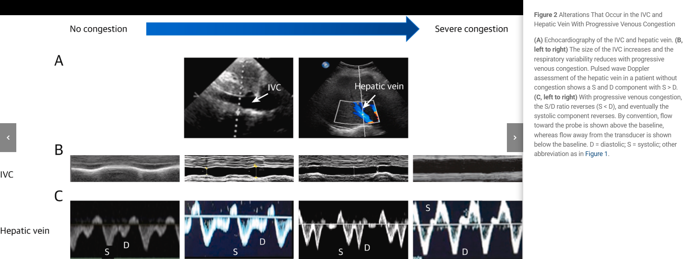
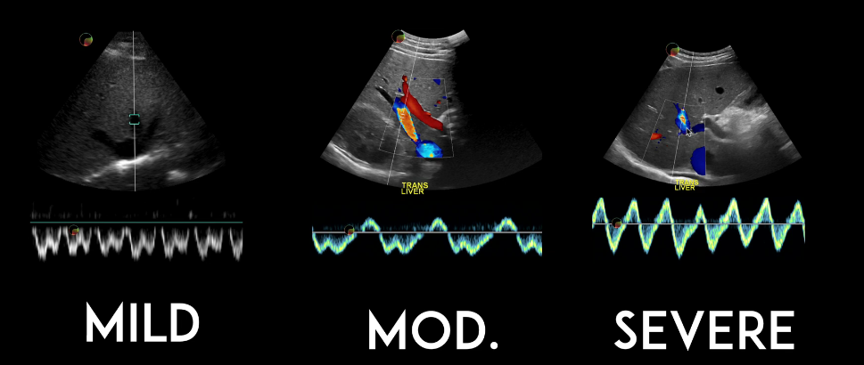
13.7.3 Vaihe 3 - Porttilaskimo
Seuraavaksi tarkastellaan maksan alueelta toista laskimoa: porttilaskimoa (portal vein). Porttilaskimo on siis suuri laskimo, joka kuljettaa ravinnerikasta mutta vähähappista verta ruoansulatuskanavasta, pernasta ja haimasta suoraan maksaan prosessoitavaksi. Sen muodostavista suonista isoimmat ovat v. mesenterica superior (SMV) ja v. lienalis (splenic vein), jotka yhdistyvät haiman takana – v. mesenterica inferior (IMV) myös syöttää tätä systeemiä ja yleensä dreneeraa v. lienalikseen ennen porttilaskimoon yhdistymistä.
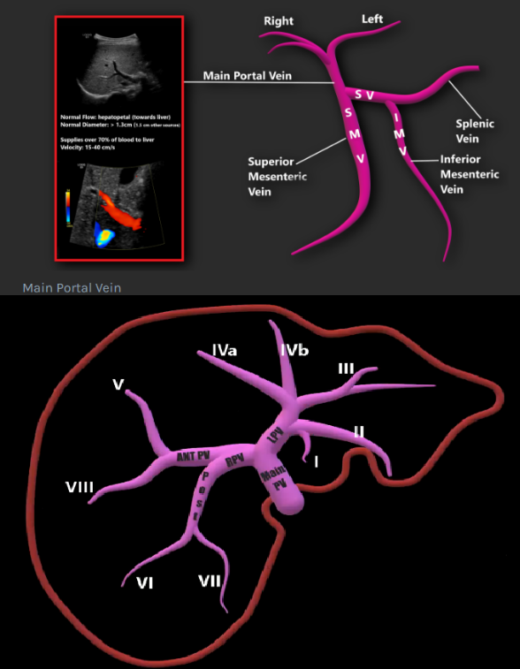
Porttilaskimon visualisoiminen onnistuu samoin kuin maksalaskimo joko subkostaalisesti tai oikealta lateraalisesti. Porttilaskimon usein tunnistaa sen hyperekoiisista (ei aina kovinkaan selkeästi) seinämistä ja väridopplerilla punaisesta/oranssista virtauksesta (virtaus on maksaan eli anturiin päin).
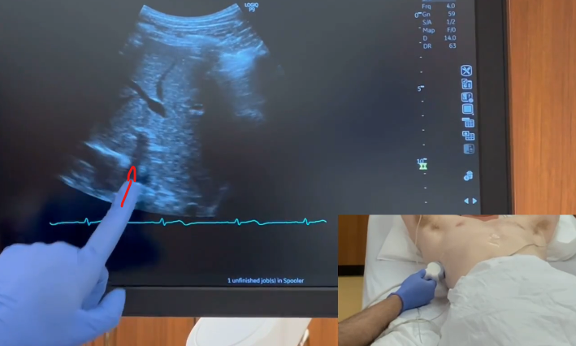
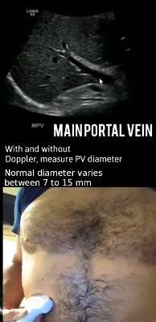
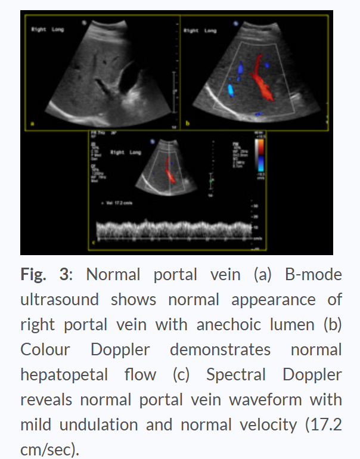
Porttilaskimon tunnistamisen jälkeen sen sisälle laitetaan PW-gate ja kerätään virtauksen aaltomuoto. Normaali porttilaskimovirtaus on positiivisesti monofaasinen ja sen maksimaalisen ja minimaalisen virtausnopeuden variaatio on pieni (<30%) eikä virtaus käänny koskaan negatiiviseksi. Kongestion noustessa virtauden nopeusvaihtelu kasvaa ja aaltoilusta tulee pulsatiilimpi. Virtaus voi jopa kääntyä negatiiviseksi (reversal of flow; alempi kuva).
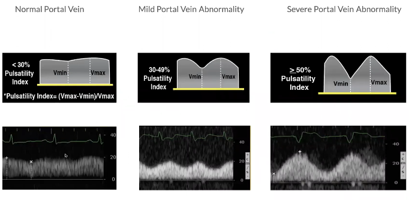
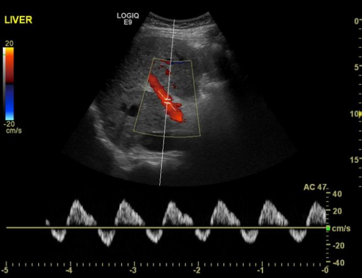
13.7.4 Vaihe 4 - Munuaislaskimo
Viimeiseksi arvioidaan vielä munuaislaskimovirtaukset. Munuaisen echo-anatomia on hyvä tunnistaa ja käydään se yksinkertaisesti läpi nyt:
Ekogeeninen kapseli tekee munuaisesta helposti erotettavan. Korteksi on yleensä isoekooinen tai hypoekooinen (yleisemmin) verrattuna normaaliin maksaan tai pernaan. Medullaariset pyramidit ovat hypoekooisia tai anekooisia verrattuna korteksiin (useimmiten pyramidaalinen muoto ei kuitenkaan visualisoidu kovinkaan hyvin). Kortikaalinen kudos ylettyy medullaan saakka Bertin kolumneina erottaen pyramidit toisistaan. Munuaisen keskellä sijaitsevaa ekogeenistä rasvakudosta kutsutaan sinusrasvaksi (renal sinus fat). Munuaisallas (renal pelvis) on hypoekooinen, mutta ei musta tai merkittävän suuri ellei ole hydronefroosia. Munuaisia ruokkii yksi muinuaisvaltimo ja dreneeraa yksi laskimo.
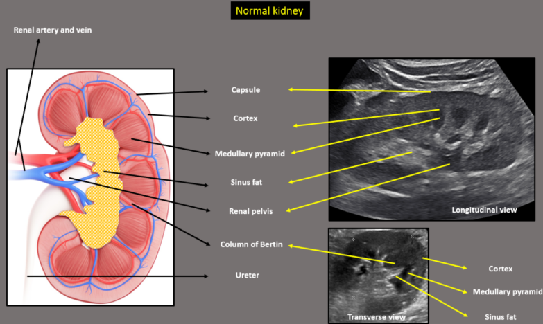
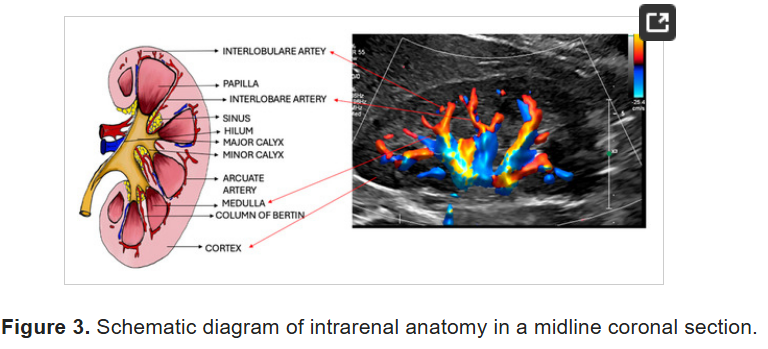
Munuaisten visualisaatio onnistuu samasta paikkaa kuin yleensä arvioidaan askites / hemoabdomen ja pleuranestekin eli lateraalisesti pitkittäisakselissa. Kannattaa laittaa väridoppler päälle, niin näkee interlobaariset virtaukset paremmin ja sitten voi asettaa PW-gaten virtauksen päälle korteksissa. Valtimo- ja laskimovirtauksen samanaikainen mittaaminen on tyypillistä, eli käyrässä nähdään niin positiivinen (arteriaalinen) kuin negatiivinen (laskimoperäinen) komponentti.

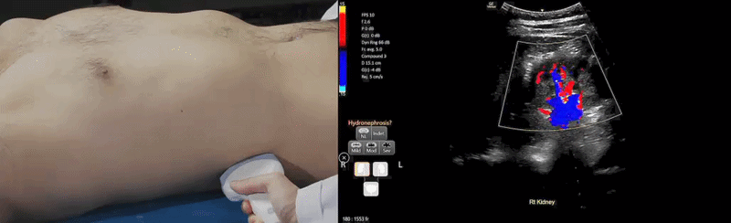
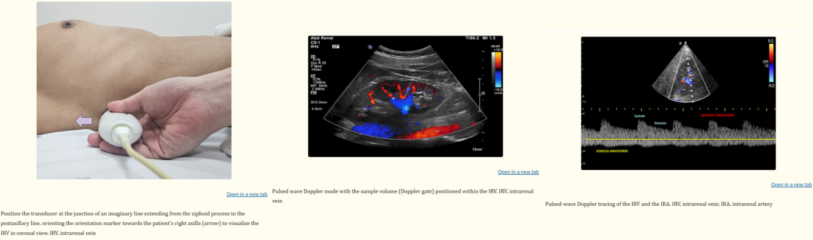
Samoin kuten porttilaskimovirtauksissa, niin normaalivirtaus on jatkuvaa ja vaihtelevuudeltaan vähäistä (pääasiassa nyt siis puhutaan laskimopuolesta eli negatiivisesta deflektiosta). Kun kongestio lisääntyy, niin aluksi virtauksesta tulee bifaasista ja sitten monofaasista (vain diastolinen virtaus näkyy).
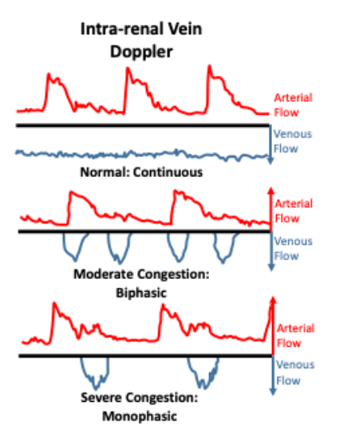
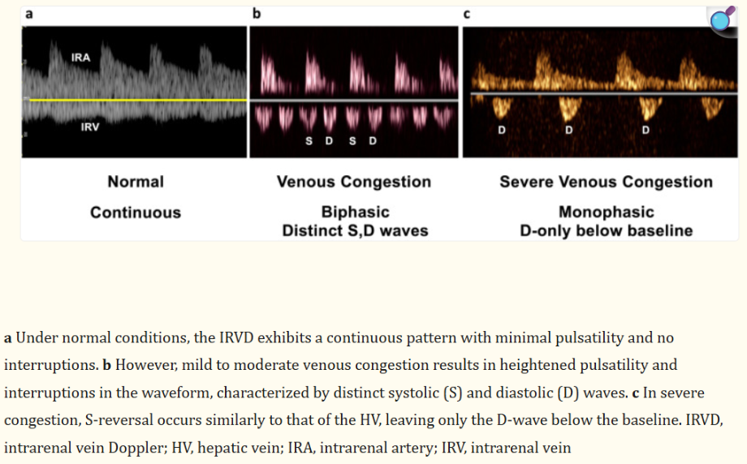
13.7.5 Vaihe 5 - Pisteytys ja gradeeraus
Mittausten jälkeen voidaan lopulta koota tiedot ja arvioida systeemisen laskimokongestion vaikeusaste. VExUS-scoren perusteella kongestio on jaettu neljään eli graduksiin 0-3.
Gradeeraus on yodella yksinkertaista: Jos IVC on < 20 mm, niin gradus on suoraan 0. Siitä eteenpäin gradus nousee sen myötä, mitä enemmän merkittävän kongestion aaltomuotoja on todettavissa.
- Maksalaskimo: Systolinen osuus näkyy positiivisena deflektiona (S-wave reversal)
- Porttilaskimo: >50% pulsatiilisuus
- Munuaislaskimo: Monofaasinen (vain D-deflektiot)
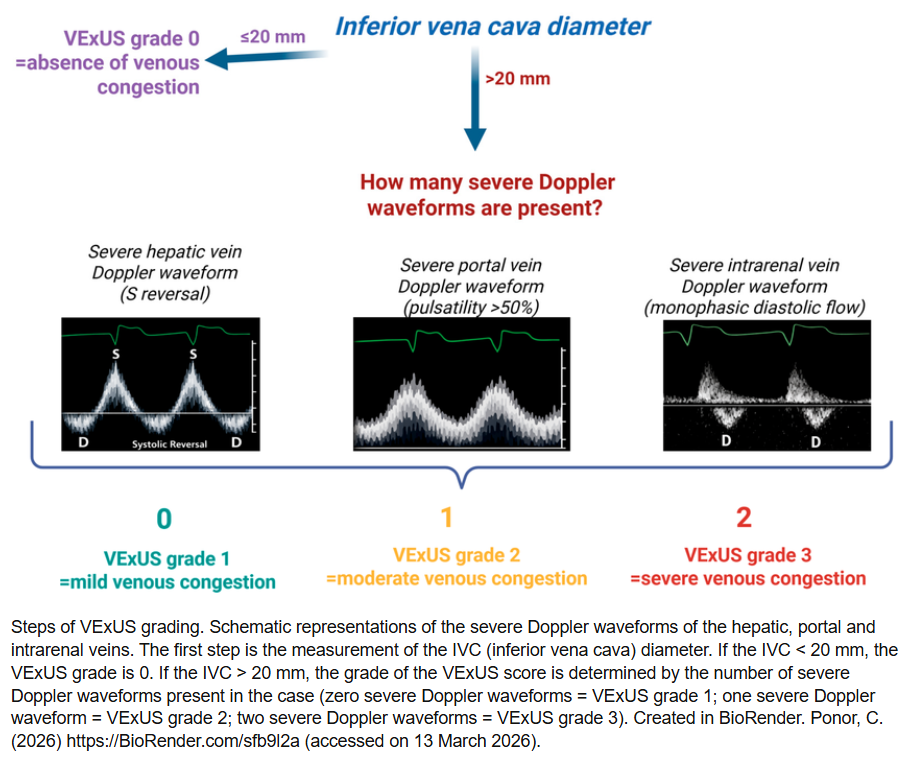
13.7.6 Sudenkuopat – VExUS
VExUS ei ole täydellinen työkalu ja kuten kaikissa UÄ-tutkimuksissa, siihen liittyy monia sudenkuoppia, jotka tulee pitää mielessä.
13.7.6.1 Maksalaskimo
Eteisvärinä on yleinen häiriötekijä monien UÄ-mittausten yhteydessä – samoin nyt taas maksalaskimodopplerissa. Eteisvärinä voi aiheuttaa A-aallon puuttumista ja S-aallon heikentymistä (S<D) ilman merkittävää oikean kammion paineiden (RAP) kohoamista. Myös muut rytmiongelmat, kuten pidentynyt PQ-aika (PR-interval) voivat johtaa vääriin tulkintoihin aaltomuodoista ilman samanaikaista EKG:ta.
Maksakirroosi (ja myös hieman rasvamaksakin) voivat aiheuttaa aaltomuotojen tylpistymistä ja sydänvaiheittaisuuden menetyksen.
Merkittävä trikuspidaalivuoto voi aiheuttaa pysyvää S-aallon kääntymistä, joka ei poistu volyymireduktiolla. S-aallon kääntyminen kyllä yleensä indikoi laskimokongestiota ja voi olla yhteydessä vaurioon kongestoituneissa elimissä, mutta ei aina toimi hyvänä nesteenpoiston ohjaajana.
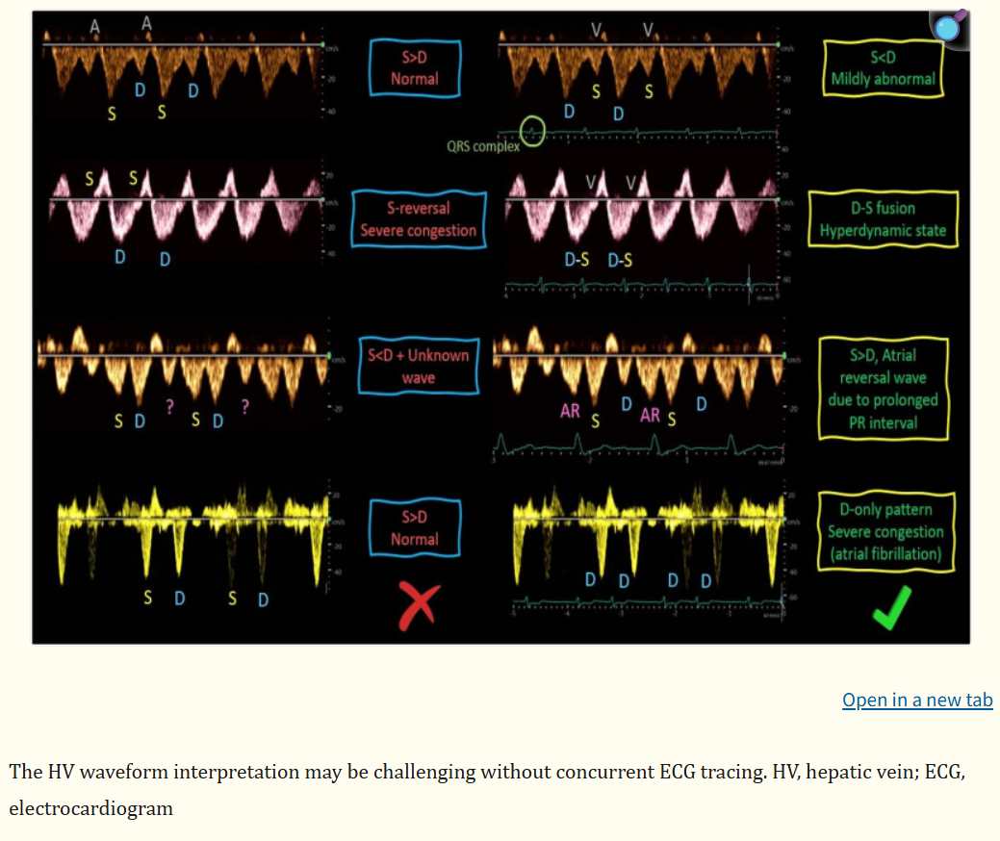
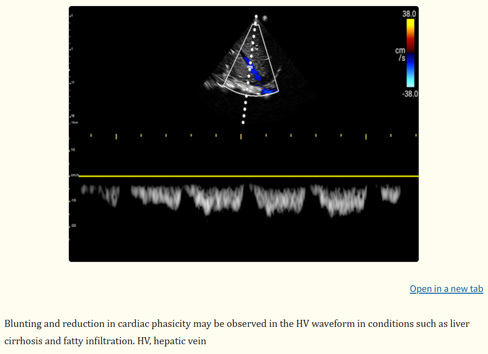
13.7.6.2 Porttilaskimo
Laihoilla potilailla ja urheilijoilla voi olla kohonnut pulsatiili-indeksi porttilaskimossa ilman merkittävää laskimokongestiota.
Kirroosissa ja portaalihypertensiossa aaltomuoto voi visualisoitua matalanopeuksisena jatkuvana virtauksena tai vaikeissa tapauksissa ns. hepatofugaalisena virtauksena eli täydellisenä virtauksen kääntymisenä.
Hengitysvariaatio voi aiheuttaa aaltojen amplitudissakin vaihtelua ja tämä voidaan väärin tulkita sydänperäiseksi pulsaatioksi. VExUS-mittauksissa potilaanhan kannattaisi pidättää hengitystään loppuekspiraatiossa, mutta kaikki potilaat eivät ole ko-operoivia tai pysty tähän.
13.7.6.3 Munuaislaskimo
Munuaislaskimon virtauksien saaminen voi olla vaikeampaa kuin portti- tai maksalaskimon, varsinkin phased array -anturilla ja cardiac presetillä (kannattaakin vaihtaa vatsa-moodiin kone, jos mahdollista). Munuaisvirtauksien tulkitsemista ei myöskään oikein ole tutkittu kroonisissa munuaissairauksissa tai munuaissiirrepotilailla.
13.7.6.4 Gradeeraus ja tulkinta
VExUS tulisi aina tulkita kliinisessä kontekstissa ja integroituna muihin tutkimuksiin, kuten anamneesiin, statukseen, labroihin ja kuvantamiseen. Optimaalisesti kardiopulmonaalinen UÄ-tutkimus tulisi aina tehdä sen lisäksi. VExUS ei suoraan sanoa, tulisiko nesteitä poistaa vai ei tai miten potilas vastaisi nestehoitoon/dekongestioon.
Esimerkiksi perikardiumeffuusiosta johtuva sydämen täyttymistoiminnan aleneminen johtaa kylläkin kongestioon ja korkeaan VExUS-scoreen, mutta liiallinen dekongestio perikardiumin tilannetta tunnistamatta voi johtaa tamponaatioon vähentämällä intrakardiaalisia paineita suhteessa perikardiaaliseen kompressioon.
VExUS siis indikoi vain yhtä komponenttia hemodynaamisesta kierrosta eikä sitä tulisi käyttää kaikkia muita arvioita korvaavana mittarina.
13.8 Volyymistatus ja nestevasteisuus
Usein sen sijaan, että lääkäriä kiinnostaisi potilaan tarkka volyymistatus, niin tarkempi kysymys lääkärin mielessä on seuraava: “Minulla on syytä ajatella, että potilaani minuuttitilavuus on riittämätön vastaamaan kudosten metaboliset tarpeet. Jos lisään laskimopaluuta antamalla suonensisäisiä nesteitä, johtaako se todennäköisesti minuuttitilavuuden ja siten kudosperfuusion paranemiseen? Tarvitseeko potilas sittenkin vasopressoreita vai diuresointia?”
Kudosperfuusio on siis pitkälti minuuttitilavuuden määrittämää ja minuuttitilavuuden (CO) määritelmä on iskutilavuus * syke. Minuuttitilavuuteen vaikuuttaa keskeisesti esikuorma (preload, kuinka paljon nestettä saa sydämeen), sydämen kontraktiliteetti (kuinka voimakkaasti sydän kykenee puristamaan nesteitä pois sisältään) ja jälkikuorma (afterload, millaista vastatuulta vasten sydämen pitää tehdä töitä saadakseen verta valtimoverenkiertoon). Keskitytään seuraavasti pääasiassa esikuormaan, joka osittain määräytyy potilaan laskimopaluun mukaan (muita tekijöitä vasemman kammion esikuormassa ovat mm. oikean kammion toiminta, LV:n toiminta, syke, myokardiaalinen komplianssi, eteisten toiminta ja läppien toiminta).
Määritellään aluksi muutama keskeinen termi:
Frank-Starlingin lain mukaan kammion kontraktiovoima on suhteellinen sen esikuormaan eli lihassäikeiden venyttymiseen ennen supistumista. Täten vasemman kammion loppudiastolista tilavuutta (LVEDV) nostettaessa voidaan myös nostaa iskutilavuutta – ainakin tiettyyn pisteeseen saakka (liiallisessa venytyksessä myosiini ja aktiini ovat liian kaukana toisistaan ja SV pysyy tasaisena tai jopa laskee).
Potilaan ollessa nestevasteinen muutokset iskutilavuudessa korostuvat ja osoittavat potilaan sijaitsevan Frank-Starlingin käyrän “jyrkällä osuudella”. On kuitenkin muistettava, että nestevasteisuus ilmiönä on täysin fysiologinen eikä sinänsä edellytä korjaamista. Yksinään nestevasteisuuden toteaminen ei ole aihe nesteenantoon, vaan nestevasteisuuden on aina yhdistyttävä huoleen riittämättömästä perfuusiosta, jotta nesteenanto olisi perusteltua.
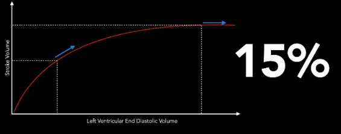
13.8.1 Nestevasteisuuden ennustaminen
On monia kliinisiä tilanteita, joissa nestevasteisuuden ennustaminen on niin itsestäänselvää, että mitään temppuja tai UÄ-tutkimuksia tarvittaisiin. Otetaan kaksi ääriesimerkkiä:
- On selvää, että potilas on vuotanut verta runsaasti ja nyt on hypovoleemisessa sokissa siitä johtuen. Potilas tarvitsee suonensisäisen volyymin täyttöä (pääasiassa massiivivuodossa tietysti verituotteilla).
- Nestevasteisuuden pre-test-todennäköisyys on todella korkea -> ei tarvitse UÄ-avusteista volyymistatuksen tai nestevasteisuuden tutkimuksia
- Potilaan vointi on stabiili ja menossa parempaan suuntaan sekä vitaalit ovat kunnossa. Ei ole (ainakaan näillä tiedoilla) syytä ajatella, että kudosperfuusio ei ole riittävä.
- Kliinisesti merkittävän nestevasteisuuden pre-test-todennäköisyys on matala ja liialliset nesteet voivat olla jopa haitallisia potilaalle -> ei tarvitse UÄ-avusteista volyymistatuksen tai nestevasteisuuden tutkimuksia tai lisänesteiden annostelua
Lisätutkimukset ovat hyödyllisiä pääasiassa tilanteissa, joissa nestevasteisuus ei ole täysin selvää muuten. Nestevasteisuuden arvioimiseksi on kehitetty useita työkaluja, joista ehkä yleisimmässä käytössä on ultraäänitutkimus. Mittaukset voidaan jakaa staattisiin ja dynaamisiin testeihin.
- IVC:n koko ja hengitysvaihtelu, VExUS
- Keuhkokongestio / pleuranestekertymät (voi myös katsoa thx-rtg:llä)
- Ei UÄ-tutkimuksia ovat mm. syke, verenpaine, kapillaaritäyttöaika, diureesi
- Passiivinen alaraajojen nosto (passive leg raise)
- Mini-nestebolustesti
Eniten tutkimusnäyttöä tällä hetkellä dynaamisista testeistä on tullut passiivisesta alaraajojen nostosta. Idea on siis se, että alaraajojen laskimostossa on n. 300-500 ml nestettä, joka saadaan jalat nostamalla sentraalisempaan kiertoon. Voidaan siis käytännössä antaa transientisti ja palautettavasti potilaalle n. 300-500 ml nestebolus ilman, että oikeasti annostellaan mitään nesteitä.
Optimaalisesti jalat tulisi nostaa sängyn päätyä nostamalla, mutta tarvittaesas voi pyytää toista henkilöä nostamaan potilaan jalat 45 asteen kulmaan ylös, jos tähän kykenevää sänkyä ei ole käytössä. Tätä asentoa pidetään n. 60-90 sekuntia.
Etukäteen tulisi olla mitannut potilaan LVOT VTI (lisää tästä aorttastenoosikappaleessa), kun potilas on 45 asteen kulmassa toisin päin eli pää koholla. LVOT VTI saadaan viisilokerokuvasta, kun PW-gate on ulosvirtauskanavassa. Se siis käytännössä kuvastaa nyt iskutilavuutta (ei suoraan, mutta LVOT VTI:n ja LVOT Diam kautta laskettaisiin iskutilavuus). Jos jalkojen nosto lisää LVOT VTI:tä >12%:lla, se viittaa potilaan olevan todennäköisesti nestevasteinen.
Tätä ei tietystikään saa tehdä, jos on epäily kohonneista vatsaontelopaineista tai kallonsisäisistä paineista.
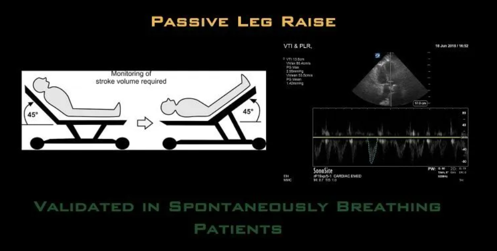
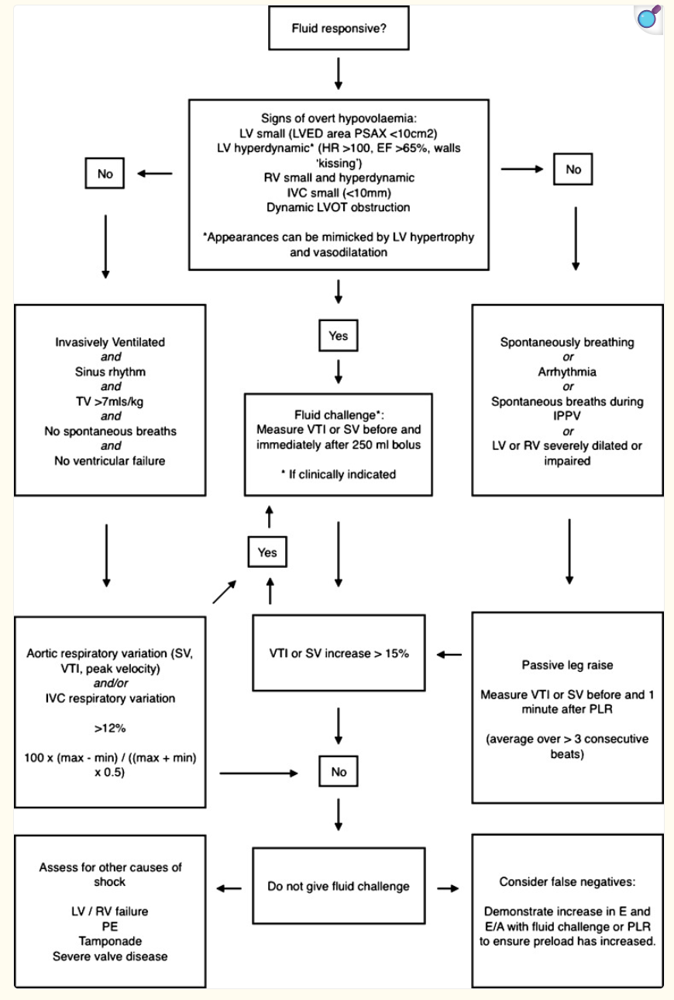
13.8.2 Nestetoleranssi
Nestetoleranssi tarkoittaa potilaan kykyä ottaa vastaan nesteitä ilman kongestio-ongelmia. Jos toleranssi ylittyy, niin sitä voi arvioida mm. tutkimalla merkkejä kohonneista LV:n täyttöpaineista (E/A >2, E/e’ >13 yms.; kts. diastoliikka-kappale). Tietysti myös kannattaa tutkia kongestion suoria merkkejä eli B-viivoja keuhkoista, pleuranesteilyä, VExUS-scorea yms.
Nestebolusten annon jälkeen tulisi siis muistaa myös seurata potilasta ja suorittaa toistuvia arviointeja, jotta haitallista nestelastia ei pääse kertymään.